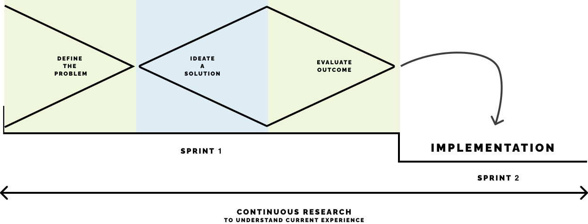

Odyssey2.0 is a B2B Management Information System (MIS) designed for the printing industry. It provides a comprehensive suite of tools including accounting, CRM, and marketing functionalities. By integrating with the printer's e-commerce website, Odyssey2.0 eliminates the need for using multiple software solutions to manage various aspects of a print shop. Instead, it serves as the central tool for printers, streamlining processes ranging from estimating and order management to implementing post-sale marketing strategies.
I initially joined the product as the first UX Designer, taking on the role of a generalist. With big effort and learning as much as I can, the product started to had a considerable growth leading to the expansion of our team. This gave me the opportunity to assume the position of UX Lead, overseeing a small team of designers.
Key learning for me during this project are:
- Research
- Information architecture
- Wireframing
- Estrategy
- Testing
- DEfining metrics
Problem
Printers are constantly facing havy woarkloads, yet always striving to improve their sales. Time is their most valuable resource, but they face the challenge of managing multiple software systems to track diverse aspects of their print shop. They encounter the need to repeatedly enter information for a single order, leading to wastage of time, loss of valuable data and mastering multiple systems for themselves and their team.
“Time is everything to me. I can't afford to waste it juggling between different software just to reenter order information. Simplicity is key for me when it comes to printing.”
I joined the project immediately after it reached the MVP. It had been designed solely by the engineering team as a robust and technical application that required a level of expertise in the printing industry. The product was not doing well, it lacked essential usability heuristics, and, more importantly, the organization failed to understand the true value that our users found in the product. It was struggling on gaining subscribers and was losing the few it had at an alarming rate.
Solution
It was crucial to adopt a Human-Centered Design approach in the current product processes. We initiated a research strategy to understand our users, how Odyssey2.0 could improve their lives and their current experiences. This process taught us that Odyssey2.0 value was its all-in-one approach; they didn't want to duplicate information across various software and risk losing vital data. To address this, we simplified the functionalities of Odyssey2.0 by employing visual aids and dividing it into easily comprehensible steps. This allowed inexperienced users to become familiar with the concepts while offering customization options for more experienced individuals. Incorporating an onboarding process was fundamental in helping users comprehend the application, familiarize themselves with different processes, and choose their preferred level of expertise.
Through this process we achieved:
70%
Conversion rate with the onboarding process.
üìâüéâ
Decrease the churn rate from 25% to 5% monthly.
Process
By implementing continuous research, we were able to consistently understand our users' experiences. This enabled us to apply a Design Thinking methodology within an agile environment.
Research
Doing a continuos research allowed us to always be aware of the current experience of our users and to understand
User journey
Receive order
Website
- Customer enters an order through the website.
- Selects specs, add specific notes and attach any files needed for the product.
- Selects specs, add specific notes and attach any files needed for the product.
Start production
MIS
- A sales rep enters order information to the MIS.
- Production staff download any files and notes needed for the order.
- Production staff updates and selects resources and costs needed.
- Customer expects to be updated on the status of they order.
Send invoice
Accounting
- Production staff updates the the order has been completed to the customer and the bookkeeper.
- Bookkeeper enters order information to their accounting system.
- Bookkeeper sends the invoice of the order to the customer so that they can pay any left amount
Recieve payment
Accounting
- Customer receives invoice, pays any left amount and send email confirmation.
- Bookkeeper enters payment to the accounting system.
Post sale
Accounting
- Sales rep thanks the customer for the order and arranges a follow-up call to discuss restocking.
- Sales rep updates status of the customer on their CRM system.
User journey
Receive order
Website
Start production
MIS
Send invoice
Accounting
Recieve payment
Accounting
Post sale
Accounting
Ideating
Doing a continuos research allowed us to always be aware of the current experience of our users and to understand
Wireframes
Prototyping
Doing a continuos research allowed us to always be aware of the current experience of our users and to understand


Evaulating outcomes
Doing a continuos research allowed us to always be aware of the current experience of our users and to understand